最新修订 / 逐部件核对侧背结构、人物同源派生 / 2026.10.17
形象各有特色，画风与制作水平统一
纪存、白鸢、七海新形象可沿用，兜灯、唐胶、胶价王R2形象也已过关，只微调配色；馆守Z也可以沿既有多轮迭代形象转换画风。机体需要鲜明的头冠、胸甲、巨拳与组件特色，不能为了去相似，把重要机体做得平凡。
历史R2：拳部与人物画法修订经过（后续用户已认可人物形象、机体方向，最新范围见上方）
2026.10.17 / 按最新反馈重做的实际源稿
R2：加重拳体，人物改用真正的新画法
你的判断已记录：社勇王R1方向不错，但不够冲击、双拳不够强；人物R1没有转成新风格。人物R1不再作为新风格达标稿推广，社勇王只保留组合方向的正面意见，不视为整机获认可。
这轮直接改源图：社勇王放大实际拳掌/指节并加粗腕与前臂；人物用外援的平涂动画稿作画法主参考，原稿只锁身份。先看兜灯校准结果，再重画唐胶、胶价王。下方是真实新稿与前稿同页比较。
社勇王 · 巨拳实体强化
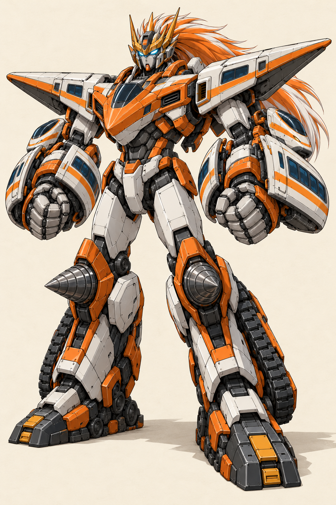
R1 · 方向可延续，拳重不达标列车臂壳的份量压过拳头，腕与拳体缺少强力感；用户没有认可整机。
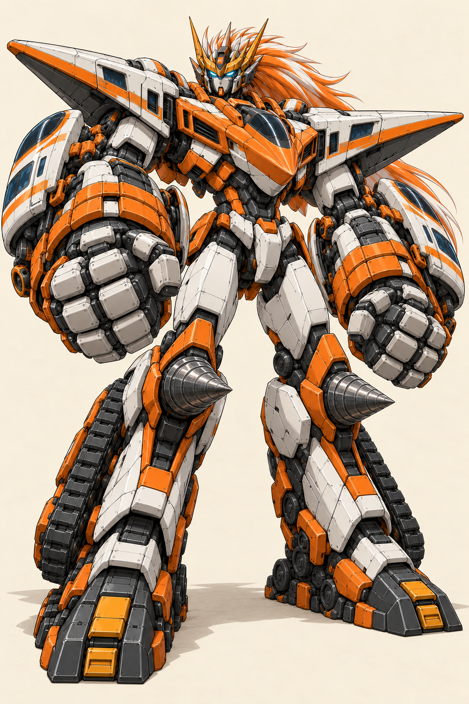
R2 · 实际拳掌、指节与腕臂加重拳面向前突出，粗腕连接厚前臂；保持长发冠、修长腿与四机组合。没有用发光圈遮住拳头。新稿仍待你判断。
V17原冲击力/拳重参照 · R2实际来源、观察和剩余问题 · 实际生图提示与五张参考。
仍需继续：翼面舷窗感要按轰炸机来源修正；臂壳内侧/背部和左右结构须同源分件校准。R2没有完成正侧背、低模、贴图或运行接入，不能从这张图推定这些已通过。
人物 · 保留身份，重新组织线条和明暗
每组左为R1，中央为R2，右为本次实际使用的外援画法参考。人物预览按眼—下巴72 UI单位归一，仅为对照版式；点击看完整透明稿。外援图只提供画法，不采用其新脸、发型和服装。
H04 · 兜灯
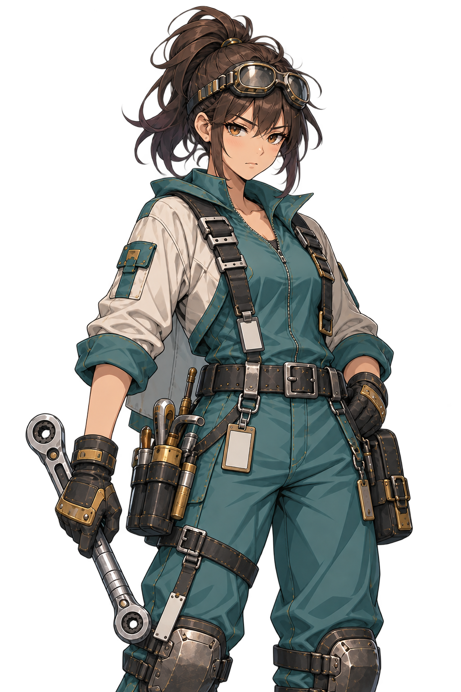
兜灯 R1 · 画风未达到发髻、护目镜、工装和长扳手保留。R1仍有大量碎高光和旧插画式刻画。
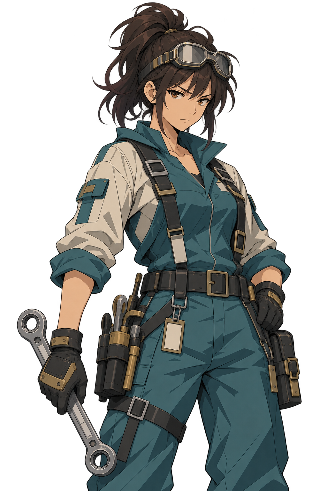
兜灯 R2 · 新转绘候选R2将头发、面部、袖口和工装改成完整色面与硬阴影，移除大量划痕和小亮点。
 画法主参考 · 不换角色身份
画法主参考 · 不换角色身份取克制线条、大片平涂和有方向的硬边阴影。另看项目原身份稿。
R2已附新的eye/chin/crop；不得沿用R1脸部坐标。
H07 · 唐胶
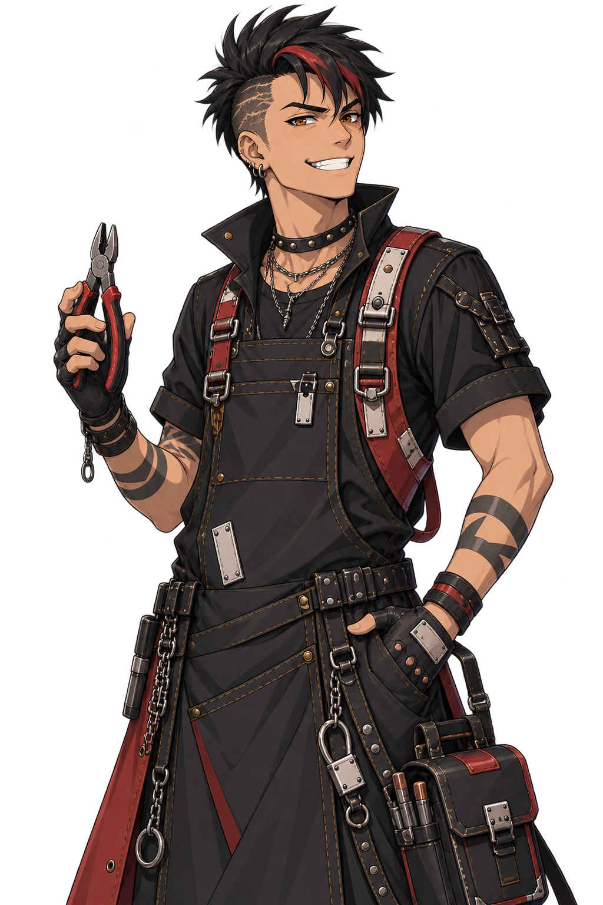
唐胶 R1 · 画风未达到削发红黑发束、咧嘴笑、围裙、钳子和纹身保留。R1仍近原稿绘制语言。
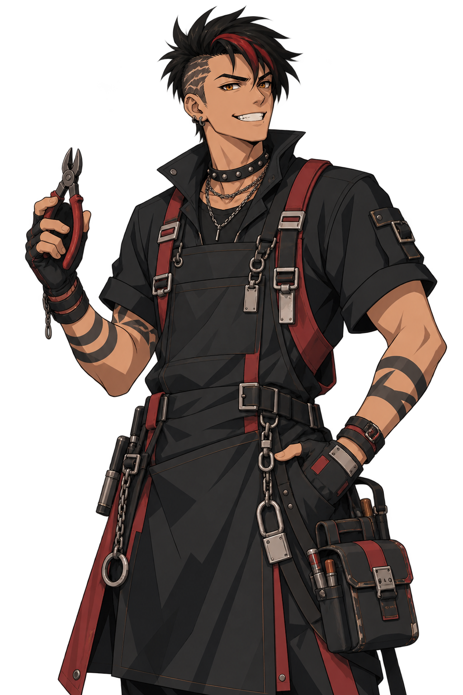
唐胶 R2 · 新转绘候选R2整合黑衣明暗、减少饰件材质刻画；保留张扬工匠性格，不采用参考里的短发沉静男性。
 画法主参考 · 不换角色身份
画法主参考 · 不换角色身份取克制线条、大片平涂和有方向的硬边阴影。另看项目原身份稿。
R2已附新的eye/chin/crop；不得沿用R1脸部坐标。
H09 · 胶价王
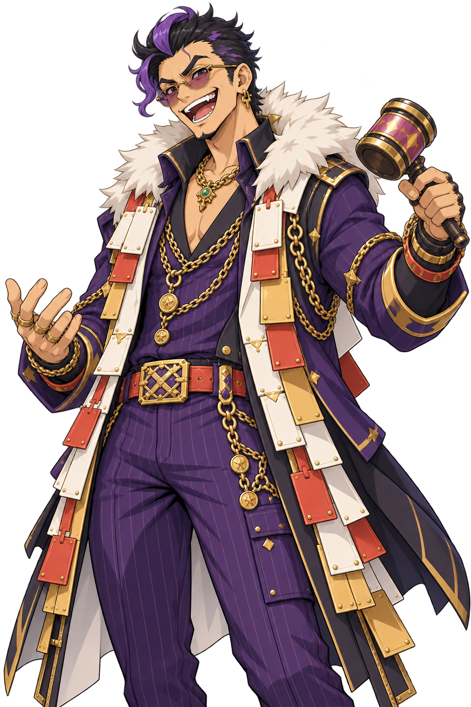
胶价王 R1 · 画风未达到紫发眼镜、夸张笑、毛领、挂片和拍卖槌保留。R1主要只是清理脏痕。
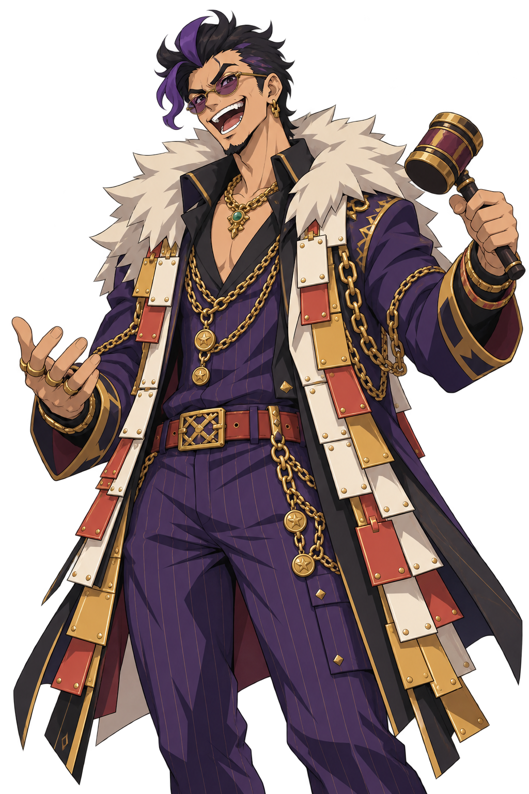
胶价王 R2 · 新转绘候选R2的毛领改成成组块面，服装和金属用分色表达；保留夸张商人身份，不换成普通西装男。
 画法主参考 · 不换角色身份
画法主参考 · 不换角色身份取克制线条、大片平涂和有方向的硬边阴影。另看项目原身份稿。
R2已附新的eye/chin/crop；不得沿用R1脸部坐标。
三个人物R2实际制作记录、透明检查和脸部锚点 · 兜灯校准提示 · 唐胶提示 · 胶价王提示。均由内置Imagegen制作，选中原图已存本项目。
这是本轮修订样例。人物具体新稿与社勇王整机都没有替你标为接受；已告知主玩法撤回R1画风达标建议。角色表情组、机体分件/模型和完整游戏升级仍要继续；当前不覆盖其运行工程或原生记录。
2026.10.17 / 最新决定与实际修订
社勇王继续修结构，人物形象固定
已认可：社勇王整体方向与画法；纪存、白鸢、七海及兜灯/唐胶/胶价王的指定形象。三个配角绑定的是本页R2源稿，不是外援卡片中另一套新脸；这轮只微调其配色。
你对R3的追加意见：保留长发、头采用V17感觉；机身与翼架分开以便肩关节转动；轰炸机配色可调整，机头向V18靠近并收掉尖喙；膝钻角度需要校正。下方已经实际重画，不只改计划。
社勇王R4 · 肩翼分件、短钝机头、银冠保长发
 当前完整源稿 · R4b。宽翼、双发动机、巨拳与履带腿延续；转轴/支架在中央机身和左右翼架之间可见。该图是结构候选，未作为可动模型验收。
当前完整源稿 · R4b。宽翼、双发动机、巨拳与履带腿延续；转轴/支架在中央机身和左右翼架之间可见。该图是结构候选，未作为可动模型验收。
| 你的意见 | 本次实际修改 | 后续制作核对 |
|---|
| 用V17头，保留头发 | 金橙繁冠改为较收敛的银色冠甲/中央橙冠，长鬃发保留 | V17实际源与核心/合体对照；具体新头仍由你判断 |
| 机翼要考虑肩可动 | 中央机身、左翼架、右翼架三部分，根部出现独立轴环和支架 | 模型分件后检查抬臂、翼架转动与发动机/列车臂壳净空 |
| 机头更像V18，别尖 | 保留中央驾驶舱，收短为饱满钝鼻与折面胸罩；没有再加第二个机鼻 | 正侧背维持同一飞机部件，避免换视图又长出尖喙 |
| 调整轰炸机配色 | 暖白/蓝石墨分区与橙色点缀，减少大面积闷灰 | 与整机和三个外部组件同源涂装，正常战棋镜头检查 |
| 膝钻角度不对 | 局部重画近侧膝钻向对应足尖的左前方，远侧保留其右前方 | 以膝部局部前轴决定绑定方向，不把屏幕左右当成机体坐标 |
看R3、R4a中间稿与实际轰炸机源
R4实际来源、两次观察与剩余工作 · 整机修订提示 · 头与膝钻局部修订提示。使用内置Imagegen，选中源图已复制到本项目。
仍未完成：完整核心/合体与分件多视图一致性、低模/UV/材质/绑定、抬臂与翼架运动、正常战棋运行。这张图的认可不能自动代替这些检查。
人物R3 · 已认可形象的轻量调色
兜灯保持青绿工装，唐胶保持黑红，胶价王保持紫金。只调整中间调、阴影与金属色；作者对照R2/R3未发现明显身份变化。下方按眼—下巴72 UI单位比较，仍不是游戏运行截图。
H04 · 兜灯
R2 · 已认可身份母稿脸、发型、服装、工具与姿态沿用。
 R3 · 配色微调
R3 · 配色微调工装略偏青绿、象牙袖色中性化、黄铜降低亮黄感。点击看完整RGBA母图。
H07 · 唐胶
R2 · 已认可身份母稿脸、发型、服装、工具与姿态沿用。
 R3 · 配色微调
R3 · 配色微调黑衣/围裙略分开为墨黑与蓝炭灰，红带提升为克制氧化红。点击看完整RGBA母图。
H09 · 胶价王
R2 · 已认可身份母稿脸、发型、服装、工具与姿态沿用。
 R3 · 配色微调
R3 · 配色微调紫色中间调略提亮、黄金收敛为赭金、毛领与挂片使用柔和骨白/砖红。点击看完整RGBA母图。
三个实际导出、认可母图、裁切/眼线与透明检查 · 兜灯提示 · 唐胶提示 · 胶价王提示。
人物可以沿确认形象继续派生，不再等待重复选脸。接收方按实际窗口接入并核对对话/头像比例；当前认可不自动覆盖表情套组、所有人物、模型或完整整改。正式运行仍由主玩法集中修改，本会话只制作源稿与候选件。
头冠原则已修正：V形、分叉、耳侧天线、角与鬃发都可按机体采用。对称/非对称、美系肌肉体块/日系流线可分散使用，配色沿各自设定。旧无牌的整体近似仍需修正，但不再据此执行全项目“去冠去角”。
人物：三主角沿新形象，三个配角保留原版夸张
| 对象 | 采用哪套形象 | 这轮改什么 |
|---|
| 纪存 / 白鸢 / 七海 | 本轮新形象已获用户确认 | 保持脸、身形、发型与衣装；继续同源头像、对话与表情，不重抽脸 |
| 唐胶 | 原版夸张发型、工具围裙、模型街气质 | 转为新墨线/大色块/硬阴影，收敛脏噪点 |
| 兜灯 | 原版发髻、护目镜、工装与工具形象 | 保留个性与表情，统一新画法和对话比例 |
| 胶价王 | 原版紫色发型、眼镜、毛领、饰物与张扬表情 | 保留夸张与商人气势，不改成另一张外援新脸 |
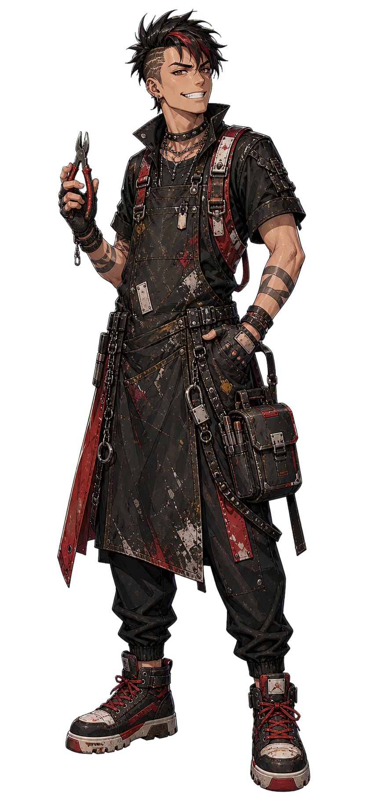
唐胶 · 原版形象来源保留发型、围裙和动作性格；当前细碎磨损画法需要转换。
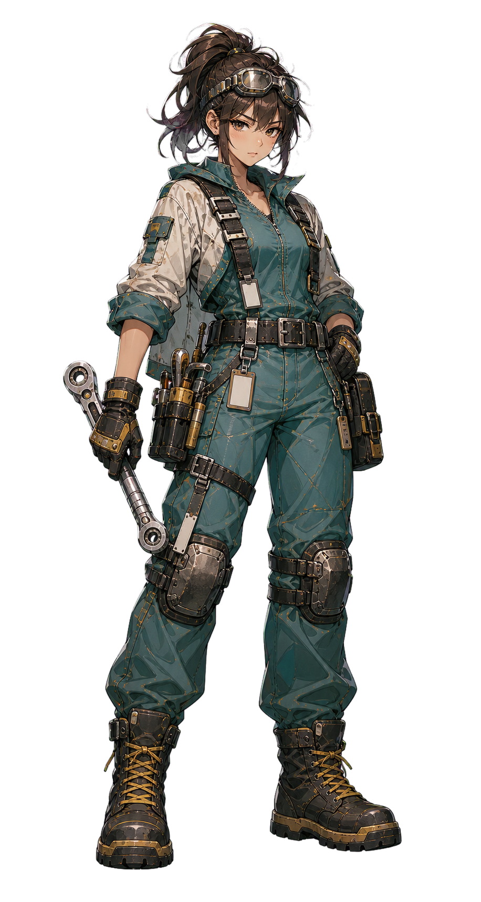
兜灯 · 原版形象来源保留发髻、护目镜和维修工装，按新风格转绘。
 胶价王 · 原版形象来源
胶价王 · 原版形象来源保留张扬外形与夸张表情，统一线条、阴影和材质表达。
馆守Z：原形象转绘优先，美系外援版保留比较
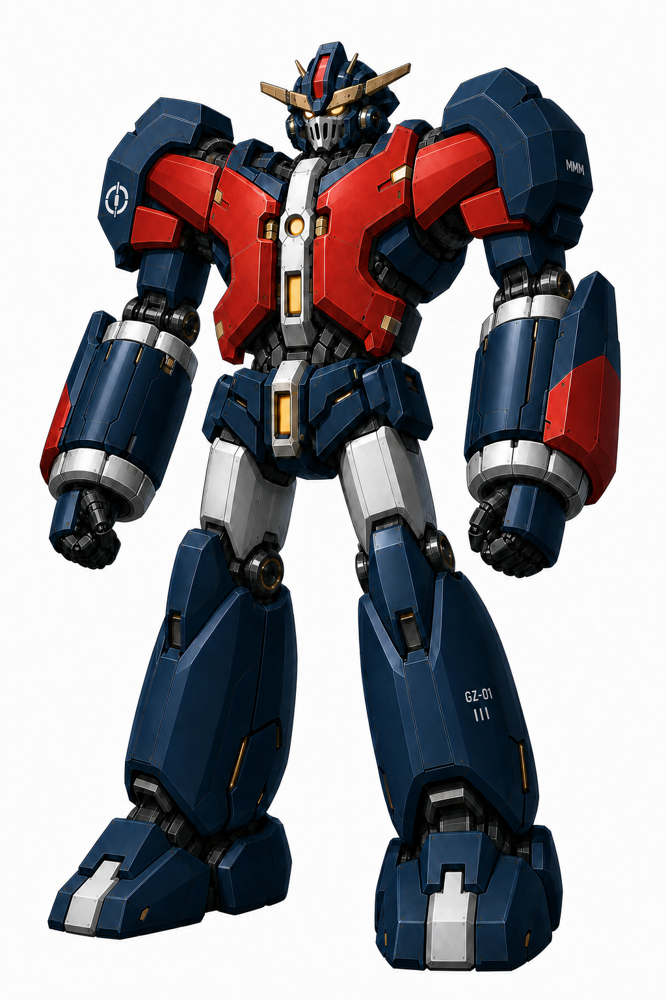
主路线 · 项目原迭代形象保留头冠、红胸甲、重前臂与巨神感，转成新画风。这里是完整时身份参考，当前自身右前臂毁损仍需另派生。
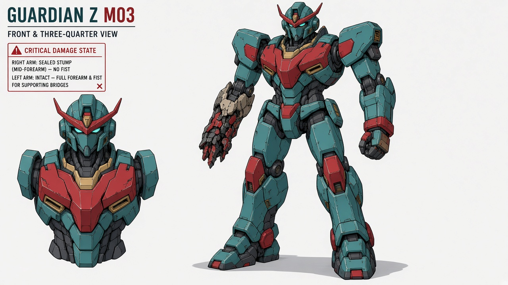
备选 · 外援偏美系方向用户并未排除宽厚、肌肉型机体。保留体块与绘制参考，不自动替换原身份母版。
社勇王：V19定比例，V17定巨拳重量
核心是同一台完整的长发勇拳。V19用于身高和头身比；双拳在勇拳V11基础上强化至社勇王V17的重量感。V17上覆轰炸机、V18胸甲和腿部继续保留。列车炮筒另外加载在强化臂外，原来的“V19右臂结构来源”绑定已撤回。
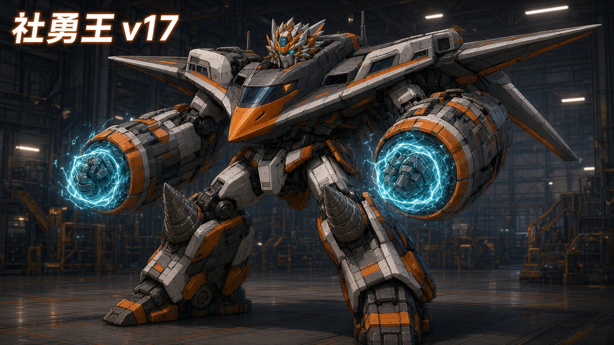
V17 · 上覆机身 + 巨拳重量目标保留轰炸机上覆与横翼；双拳/前臂的厚重程度也以此为目标，不能仅放大发光圈。
V18 · 取胸甲与腿部借胸部焦点、履带腿甲和宽足。合并到V17上覆机身，不重复堆两个机鼻；全身比例改用V19。
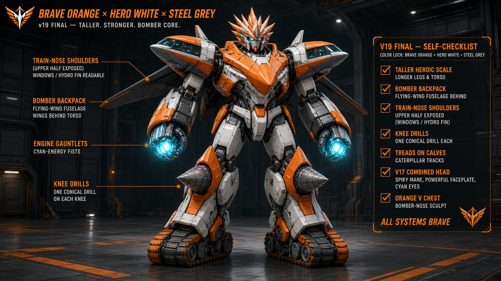
V19 · 身高与头身比例采用这版修长而有力量的整体比例，结合V17的巨拳重量；旧右臂框选已撤回，肩上车头和发动机拳套不照搬。
 勇拳V11 · 长发与双拳
勇拳V11 · 长发与双拳保留完整机器人、长发/鬃发与巨拳身份。以这套双拳为基础继续增强，达到V17的厚重程度，转换最新画风。
最终部件关系
- 核心不变：完整勇拳V11在场，双拳加强至V17的厚重体量。
- 轰炸机：上覆肩背/上身，胸部使用同一机身部件组织。
- 海底列车：拆成两节，车头朝后，中段两侧打开，形成双臂外挂炮筒。
- 钻探机：进入外腿架与足部，保留履带和钻头来源。
- 比例：采用V19身高与头身比，同时保住V17巨拳的份量。
四台物理来源，不把长发、拳甲或外挂炮筒另算新机体。首个整合样例已制作，见下方；仍待用户决定造型方向。
炮筒图源核对：用户指出可能是V20。
旧保留包说明记录V20—V24已删除，本轮没有找到可核对的V20图，因此版本号保留待核对。两节列车、车头朝后、中段左右打开、挂在强化双臂之外的设计要求已经明确，可以继续画样例，不再以V19右臂代指。
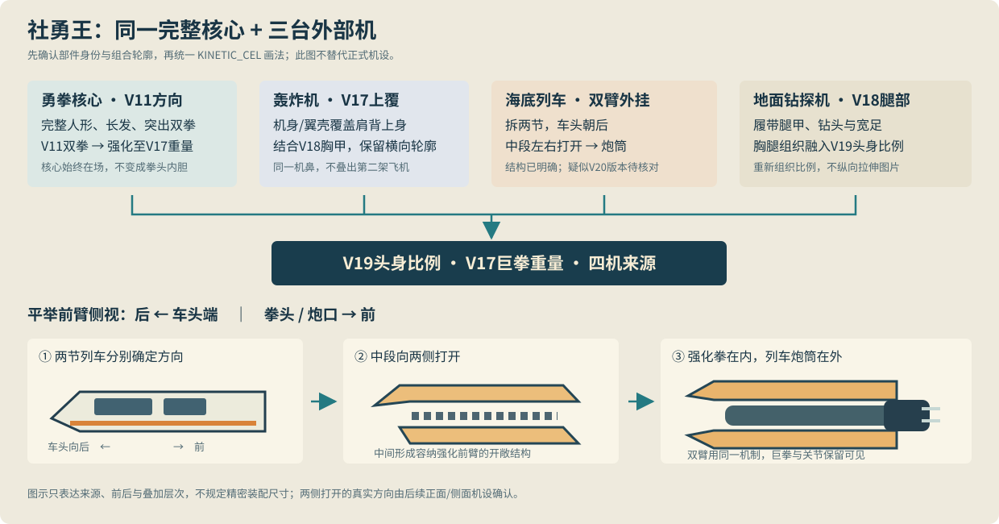
部件来源与前后示意。下一组样例包含全身正面/三分之四、平举臂侧视展开、核心/合体同基准对照。分别检查V19比例、V17拳重与列车炮方向；不追加精密装配仿真。
查看三台外部机的原始来源
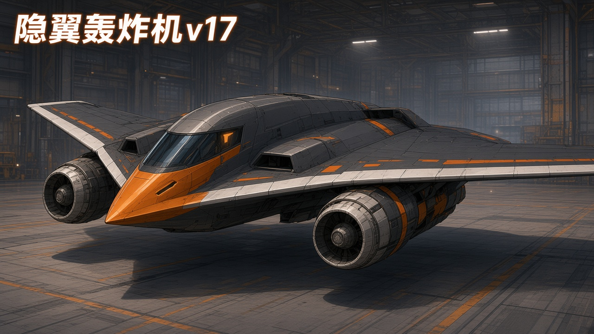
轰炸机：上覆机身/翼壳，发动机与列车炮筒的归属分开。
 海底列车：保留车头、分节、窗带和壳体，打开后仍能追认。
海底列车：保留车头、分节、窗带和壳体，打开后仍能追认。
 地面钻探机：履带/钻头与腿甲来源明确，采用V18的合体组织。
地面钻探机：履带/钻头与腿甲来源明确，采用V18的合体组织。
下一步样例顺序：三主角沿已确认形象派生；唐胶/兜灯/胶价王与馆守先做原形象转绘；社勇王优先画四机整合全身与列车炮筒侧视；无牌补足独立而鲜明的识别单元。其余环境、敌体、武器与Memphis使用范围继续沿原计划。
本段是升级方案修订，照片/原图均为真实已有参考，不是新整合稿。选取局部不等于接受三版整机，也不意味着模型、动作或主工程已更新。查看来源绑定与用户决定
历史R1 · 首个整合样例（拳重未达到）
本次按已选来源实际绘制整机；列车炮先做单体结构页，修正了第一稿上下打开的误读，再加入全身。请看身材与头身比、真实巨拳的厚重程度、轰炸机上覆及臂外列车炮能否构成你要的整体形象。
整机R1 · 方向获正面意见，拳重待改V19定身材，尝试V17上覆与拳重、V18胸腿。用户明确指出拳重和冲击力仍不足，现由上方R2继续修订。
R1组合方向可以延续，用户指出的拳重和冲击力不足仍须修订。正侧分件、低模/材质/动作适配继续制作；不把方向正面意见写成整机或运行通过。
与“战斗主玩法打磨”的交接边界
本会话负责源图、造型与独立候选制作件；正式运行资产、加载映射、规则/交互与原生验证已由主玩法会话确认集中接入。当前不覆盖其运行文件、不占用其Godot测试窗口，也不再同时修改施工台账。
查看交接说明：固定来源、认可范围、制作规格、接入与反馈。主玩法已在交接说明第8节确认接收、优先对象与接口。美术制作同时推进；仅在复制正式资源时避开单次原生录制，不等待整个整改结束。已有新楼体、架座和B地面件保留复用，缺口由本会话补齐。查看发送记录。全部52包范围保留。
已按接收规格制作第一组三主角资源
纪存、白鸢从已确认来源做独立透明导出，七海复用已有独立稿。下方按实际像素眼线/下巴坐标缩放到72 UI单位，只检查头部尺度，不冒充游戏截图。原形象认可与本次导出、运行检查分别记录。
H01 · 纪存独立RGBA源稿；1024×1536。已交接；主玩法已记录接入，本会话未原生复验。
H02 · 白鸢当前两手修正版；1024×1536。旧R1曾交接，现发现三手错误而停作派生；当前修正版留本会话确认，尚未交接或换入运行。
H03 · 七海独立RGBA源稿；1024×1536。复用已有稿；主玩法已记录接入，本会话未原生复验。
像素裁切、eye/chin、来源/导出哈希及接收接口 · 内置生图提示与实际输入。头像使用同一母稿裁切，不另外重画脸；主玩法已登记实际对话与72/112头像接入/尺度检查；本会话未作独立原生复验。
历史R1 · 用户指出没有用上新风格
以下保留被指出画风不足的历史R1：身份保留成立，但清理脏痕并未完成画法转换。作者之前的达标判断已撤回；当前修订见上方R2对照，勿将这些旧稿继续推广为新风格成品。
H04 · 兜灯透明源稿，1024×1536；已附实际crop/eye/chin。造型来源沿原版，当前导出与运行质量分别检查。
H07 · 唐胶透明源稿，1024×1536；已附实际crop/eye/chin。造型来源沿原版，当前导出与运行质量分别检查。
H09 · 胶价王透明源稿，1024×1536；已附实际crop/eye/chin。造型来源沿原版，当前导出与运行质量分别检查。
实际制作记录与裁切/眼线接口 · 内置生图实际提示与身份/画风参考分工。尚未由本会话替换运行文件，表情套组及实际UI检查继续。